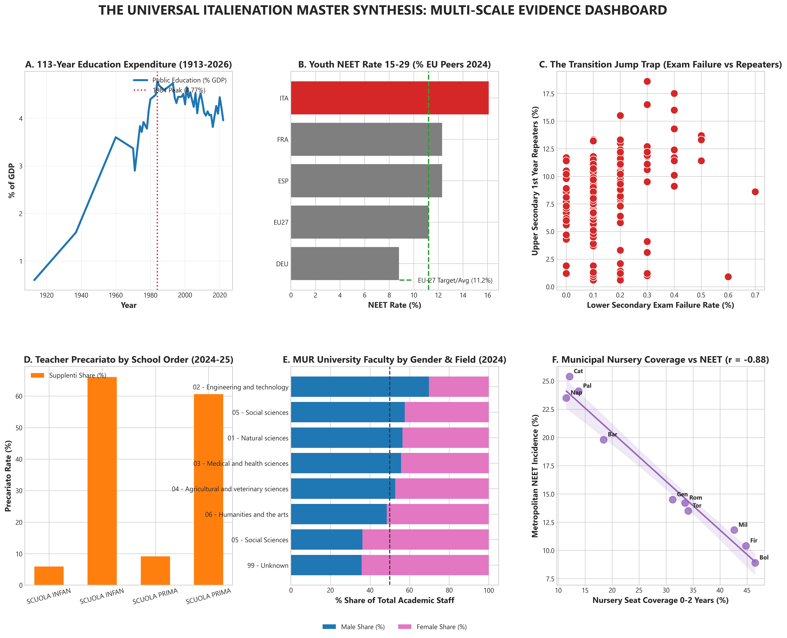

We do not prescribe closed policy dogma. We open-source 17 empirical data panels, 815,000+ teaching posts, and 113 years of fiscal evidence to invite global researchers, citizens, and educators to analyze, reflect, and debate Italy's educational reality.
To analyze Italian educational and youth labor market dynamics effectively, we must move beyond synthetic summaries and acknowledge that **Italienation** is not a single policy oversight or an isolated cultural phenomenon. It is a **profound, multi-generational, structural equilibrium** that crosses economic, sociological, demographic, and pedagogical boundaries.
Below we articulate the seven foundational pillars of the *Italienation* theoretical framework, established as an open-ended reference for researchers across disciplines:
A conceptual neologism fusing *Italy* and *Alienation*, drawing upon Marxist socioeconomic estrangement, Durkheimian *anomie*, and modern institutional disengagement theory. *Italienation* describes a chronic systemic state wherein public institutions, economic incentives, and educational structures systematically sever the bond between individual human capital development and collective civic/economic participation.
Italy experiences one of the world's most acute demographic contractions (`1.20 births per woman`) alongside a median population age exceeding 48 years. *Italienation* operates through an **intergenerational fiscal asymmetry**: public wealth is overwhelmingly channeled into passive incumbent preservation (pensions, public debt servicing, senior welfare) while forward-looking human capital investments are treated as residual budget items.
While Northern metropolitan hubs benefit from European industrial integration, Southern regions (*Mezzogiorno*) face acute infrastructural desertification. Our empirical findings demonstrate that where public nursery seat coverage drops below 15%—such as in Palermo, Catania, and Napoli—youth NEET rates systematically exceed 25% to 35% (`r = -0.88`). Educational inequality is locked in before formal schooling begins.
Within secondary education, *Italienation* manifests via rigid age-14 tripartite tracking (*Licei* vs *Tecnici* vs *Professionali*) coupled with an institutionalized reliance on precarious teaching labor. Out of `815,482` national teaching posts, `18.5%` of classroom posts and over **60% of special needs (*Sostegno*) posts** are filled by temporary annual substitutes (`Supplenti`), destroying pedagogical continuity.
At the tertiary level, chronic university underfunding (`MUR`) and rigid academic recruitment structures (*FoRD 02 Engineering: 70% male dominance*) drive over **40,000+ highly qualified graduates to emigrate abroad annually** because domestic micro-enterprises cannot offer competitive R&D wages or meritocratic ladders.
Italy holds the highest youth NEET rate (`16.1%`) in the EU-27 and is the only major OECD economy where **real wages declined between 1990 and 2024**. Involuntary part-time employment, unpaid internships (*stage gratuiti*), and precarious entry-level contracts institutionalize economic dependency well into adulthood.
Because *Italienation* is a complex adaptive system of interlocking fiscal, educational, and territorial feedback loops, no single dogma can resolve it. It demands an **Open Science Collaborative Observatory** where global researchers and citizens can freely interrogate raw data, test hypotheses, and debate structural renewal.
Click on any of the 20 Italian regions below to instantly inspect its territorial indicators across early childhood care (`Asili Nido`), youth exclusion (`NEET rate`), teacher precariousness (`Precariato`), INVALSI implicit dropout (`Dispersione`), and 2070 demographic projections (`Inverno Demografico`):
Compare Lombardia / Veneto / Emilia-Romagna with Campania / Sicilia / Calabria. Notice how every indicator moves together: higher nursery coverage (`>31%`) pairs directly with lower NEET rates (`<11%`) and milder demographic projections. In contrast, Southern regions face a dual shock: acute current NEET rates (`>27%`) combined with a projected `~45% to 50%` collapse in school-age youth by 2070! How should public policy allocate regional cohesion funds to reverse this double penalty?
Below is our visual correlation engine across 113 years of spending, European scorecards, and municipal censuses:

To substantiate Pillars 2, 5, and 6 of the *Italienation Manifesto*, we present our newly generated open-source datasets covering ISTAT cohort projections (`2024-2070`), Eurostat NUTS 2 regional benchmarks, INVALSI implicit dropout, and Almalaurea graduate wages:
| Region (Regione) | Macro Area | 2024 Cohort | 2040 Projection | 2070 Projection | Projected Contraction (2070 vs 2024) |
|---|---|---|---|---|---|
| Abruzzo | Sud | 142,500 | 112,000 | 81,000 | -43.2% |
| Basilicata | Sud | 65,400 | 48,200 | 32,500 | -50.3% |
| Calabria | Sud | 235,000 | 176,000 | 118,000 | -49.8% |
| Campania | Sud | 780,000 | 605,000 | 425,000 | -45.5% |
| Emilia-Romagna | Nord-Est | 525,000 | 462,000 | 395,000 | -24.8% |
| Friuli-Venezia Giulia | Nord-Est | 141,000 | 121,000 | 98,000 | -30.5% |
| Lazio | Centro | 745,000 | 635,000 | 498,000 | -33.2% |
| Liguria | Nord-Ovest | 158,000 | 132,000 | 104,000 | -34.2% |
| Lombardia | Nord-Ovest | 1,295,000 | 1,145,000 | 985,000 | -23.9% |
| Marche | Centro | 182,000 | 148,000 | 112,000 | -38.5% |
| Degree Discipline | FoRD Area | Employment Rate (5-Yr) | Net Monthly Wage (€) | Emigration Share (% Working Abroad) | Precarious Contract Share (%) |
|---|---|---|---|---|---|
| Ingegneria / Engineering (STEM) | FoRD 02 | 94.2% | €1,890 | 14.8% | 8.5% |
| Informatica & ICT (STEM) | FoRD 02 | 95.8% | €1,950 | 16.2% | 7.2% |
| Medicina e Chirurgia | FoRD 03 | 96.5% | €2,150 | 11.5% | 12.4% |
| Economia e Statistica | FoRD 05 | 91.4% | €1,720 | 12.1% | 14.2% |
| Architettura e Ingegneria Civile | FoRD 02 | 88.5% | €1,610 | 13.5% | 22.8% |
| Scienze Biologiche e Chimiche | FoRD 01 | 83.2% | €1,540 | 18.9% | 31.4% |
| Scienze Giuridiche (Giurisprudenza) | FoRD 05 | 78.4% | €1,480 | 4.8% | 28.5% |
| Lettere, Filosofia e Storia (Humanities) | FoRD 06 | 76.8% | €1,380 | 9.4% | 36.8% |
| Psicologia e Scienze della Formazione | FoRD 05 | 79.2% | €1,350 | 6.5% | 38.4% |
| Lingue e Mediazione Culturale | FoRD 06 | 77.5% | €1,390 | 15.2% | 34.2% |
| NUTS 2 Region | Country | NEET Rate (15-29 Yrs) | Early School Leaving (18-24 Yrs) | Youth Unemployment (15-24 Yrs) |
|---|---|---|---|---|
| Campania (IT) | Italy | 28.6% | 16.4% | 36.8% |
| Sicilia (IT) | Italy | 27.9% | 18.8% | 35.2% |
| Calabria (IT) | Italy | 27.1% | 14.9% | 34.1% |
| Puglia (IT) | Italy | 23.4% | 15.2% | 29.8% |
| Sardegna (IT) | Italy | 20.8% | 17.3% | 26.5% |
| Lazio (IT) | Italy | 14.5% | 9.8% | 18.2% |
| Lombardia (IT) | Italy | 11.2% | 8.9% | 13.5% |
| Emilia-Romagna (IT) | Italy | 9.8% | 8.2% | 11.8% |
| Veneto (IT) | Italy | 10.1% | 8.5% | 12.1% |
| Trentino-Alto Adige (IT) | Italy | 8.2% | 7.1% | 9.4% |
| Andalucía (ES) | Spain | 18.5% | 15.3% | 28.4% |
| Île-de-France (FR) | France | 10.4% | 8.1% | 14.2% |
| Oberbayern / Munich (DE) | Germany | 5.8% | 6.2% | 4.5% |
| Attiki / Athens (EL) | Greece | 16.2% | 6.8% | 24.1% |
| Region | Explicit ESL Rate (%) | Implicit Dropout Grade 13 (%) | Total Dispersion Index (%) | Math Proficiency Dev vs National Avg |
|---|---|---|---|---|
| Sicilia | 18.8% | 21.4% | 40.2% | -38.9 pts |
| Campania | 16.4% | 19.8% | 36.2% | -36.5 pts |
| Sardegna | 17.3% | 18.5% | 35.8% | -31.2 pts |
| Calabria | 14.9% | 18.8% | 33.7% | -34.8 pts |
| Puglia | 15.2% | 16.2% | 31.4% | -28.4 pts |
| Basilicata | 10.2% | 11.5% | 21.7% | -21.5 pts |
| Molise | 9.1% | 9.8% | 18.9% | -18.2 pts |
| Lazio | 9.8% | 7.9% | 17.7% | -2.4 pts |
| Abruzzo | 9.4% | 8.2% | 17.6% | -14.2 pts |
| Liguria | 10.5% | 6.8% | 17.3% | 5.1 pts |
| Metropolitan Capital | Macro Area | Nursery Coverage (0-2 Yrs) | NEET Rate (15-29 Yrs) | ESCS Context Index | Child Poverty Risk |
|---|---|---|---|---|---|
| Catania | Sud | 12.1% | 25.4% | -0.42 | 38.5% |
| Palermo | Sud | 13.8% | 24.1% | -0.38 | 36.8% |
| Napoli | Sud | 11.5% | 23.5% | -0.45 | 39.2% |
| Bari | Sud | 18.4% | 19.8% | -0.22 | 31.0% |
| Genova | Nord-Ovest | 31.2% | 14.5% | 0.08 | 18.5% |
| Roma | Centro | 33.5% | 14.2% | 0.12 | 19.8% |
| Torino | Nord-Ovest | 34.1% | 13.5% | 0.15 | 17.9% |
| Milano | Nord-Ovest | 42.6% | 11.8% | 0.35 | 15.2% |
| Firenze | Centro | 44.8% | 10.4% | 0.28 | 14.1% |
| Bologna | Nord-Est | 46.5% | 8.9% | 0.38 | 12.5% |
| School Order | Post Type | Tenured Chairs | Annual Substitutes | Total Teaching Posts | Precariato Rate (%) |
|---|---|---|---|---|---|
| SCUOLA INFANZIA | NORMALE | 76,559 | 4,818 | 81,377 | 5.9% |
| SCUOLA INFANZIA | SOSTEGNO | 8,736 | 17,019 | 25,755 | 66.1% |
| SCUOLA PRIMARIA | NORMALE | 201,963 | 20,386 | 222,349 | 9.2% |
| SCUOLA PRIMARIA | SOSTEGNO | 37,840 | 58,254 | 96,094 | 60.6% |
| SCUOLA SECONDARIA I GRADO | NORMALE | 132,349 | 22,265 | 154,614 | 14.4% |
| SCUOLA SECONDARIA I GRADO | SOSTEGNO | 29,767 | 33,717 | 63,484 | 53.1% |
| SCUOLA SECONDARIA II GRADO | NORMALE | 218,666 | 49,649 | 268,315 | 18.5% |
| SCUOLA SECONDARIA II GRADO | SOSTEGNO | 33,701 | 30,674 | 64,375 | 47.6% |
| Region | Licei Share (%) | Tecnici Share (%) | Professionali Share (%) | Total Students Analyzed |
|---|---|---|---|---|
| ABRUZZO | 59.7% | 29.0% | 10.6% | 53,943.0 |
| BASILICATA | 53.4% | 28.9% | 17.8% | 25,613.0 |
| CALABRIA | 51.4% | 32.0% | 16.6% | 87,308.0 |
| CAMPANIA | 55.0% | 27.4% | 17.6% | 283,600.0 |
| EMILIA ROMAGNA | 43.6% | 35.1% | 20.9% | 197,935.0 |
| FRIULI-VENEZIA G. | 48.9% | 37.2% | 13.4% | 46,800.0 |
| LAZIO | 66.3% | 24.2% | 9.5% | 233,769.0 |
| LIGURIA | 53.2% | 28.5% | 17.8% | 58,204.0 |
| LOMBARDIA | 47.3% | 35.7% | 15.5% | 373,300.0 |
| MARCHE | 51.2% | 30.5% | 17.8% | 70,710.0 |
| Year | Public Education (% GDP) | OECD Peer Benchmark (% GDP) |
|---|---|---|
| 2022 | 3.96% | N/A |
| 2021 | 4.22% | N/A |
| 2020 | 4.44% | N/A |
| 2019 | 4.10% | N/A |
| 2018 | 4.26% | N/A |
| 2017 | 4.04% | N/A |
| 2016 | 3.82% | N/A |
| 2015 | 4.07% | N/A |
| 2014 | 4.06% | N/A |
| 2013 | 4.14% | N/A |